ソウルキャリバー４ キャラクリ 懐かしキャラ 編 その２
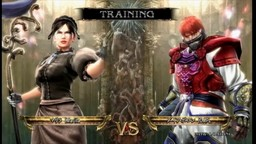
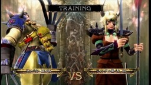
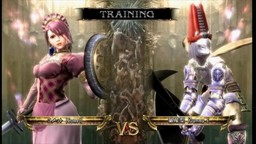
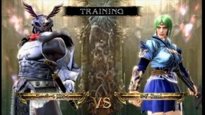
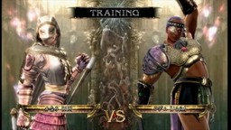
先のバビル２世 編、懐かしキャラ 編 その１に続き、『ソウルキャリバー４』のキャラクタークリエイション(略してキャラクリ)で、アニメ・マンガ・特撮キャラを私なりに翻案してみた。ブログ等のアヴァター作成と同じくキャラクリには当然の制限があるが、その制限を超えるために独持解釈を加える必要があるのが楽しい。 ゲームでは、別に、同じキャラ流派のものが一人しか作れないという制限はないのだが、なんとなく私は同じ流派を二回使わないようにしてここまで作ってきてしまったので、逆にそれを「縛り」と考えて、使ってないキャラ流派に合うようなキャラを選ぶという動機も持つようになった。 ■マリラ 【Marilla】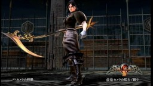
アニメ『赤毛のアン』からマリラ・カスバート。そのまま日本語名：マリラ、英語名：Marilla。最近ジブリから映画化もされていたらしい。 はじめ大人のミンキーモモを作ろうとして、服装を地味めに、髪も黒めに…とやっていくと、ああ、これはマリラのイメージだと気付いて、マリラを作ることにした。ただ、男性顔に年寄顔はあっても女性顔に年寄顔がないので、アンと出会うずっと前の中年のマリラといった感じになった。 保守的ではあるんだけど、中年のマリラには、まだ袖が含らんだ服も着てみようという気もあるのかな。しかし、モモの先にマリラを望むのか…私は。 農作業でも大鎌は使うか…ということで、流派はザサラメールにした。ただ、すぐ横のダイアポロンがアポロンなのにゼウス的なため、この鎌を持ったマリラに、私はヘラ的性格を見るようになってしまった。 ■ダイアポロン 【Dai-Apollon】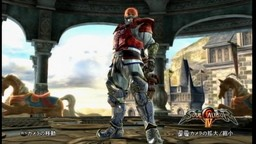
『UFO戦士 ダイアポロン』よりダイアポロン。英語名は Dai-Apollon だが、キャラクリの 12 文字制限のため、DAPL と入力している。ラテン語的に "Dei Apollo" と考えると、ただのアポロ神というより「神、すなわちアポロ」(Dei が属格、Apollo が呼格になる…と思う) といった感じで、唯一絶対神としての太陽神への信仰を思わせる。まぁ、日本語名では「大日如来」を思い出すところだが。 ところで、このダイアポロン、キャラクリのコツというか…、「胸に燃えてる日輪」を「決闘者のネックレス」で表現したのだが、これが鎧の前に出てくるのは 3D 特有のバグみたいなもので、体格を大きくしすぎると消えてしまう。巨大ロボらしく体格を大きくしたいところだが、体格を +20 ぐらいまでに留める必要がある。 流派はアスタロス、武器はテラームーンを持たせている。 ■ウルバリン 【Wolverine】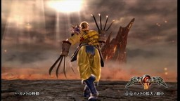
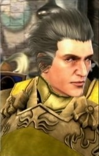
アニメ＆アメコミ『X-MEN』よりウルバリン。英語名：Wolverine、…と<ruby><rb>綴</rb><rt>つづ</rt></ruby>るらしい。 このキャラはマスクとったほうが、ウルバリンらしい気がする。 使う武器から流派はヴォルド、武器は猫手。これはヴォルドが残っていたから優先した面もあるが、むしろ、アンドロー梅田を作るときヴォルドを使うことを考えたが、そうしなかったのは、後でウルヴァリンを作る予定だったからという面のほうが大きい。 ■ジャングル黒べえ 【Black-Beh】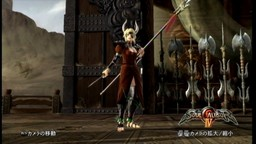
藤子・F・不二雄『ジャングル黒べえ』。英語名は Black-Beh ということにして BB と入力している。「ウーラウラウラウラ…」ということで「ウーララッ、ウーララッ」の Linda にしようかともちょっと思ったが、こうした。ちなみに、キャラクリ表の列としてエヴァ三号機的な位置にもある。この名から私は Big Brother や Darth Vader を思い出す。 ジャングル黒べえのデザインを見ると、くちびるだけでなく手先や足先も肌色になっている。これは、アフリカやアマゾンの「土人」の映像で、そういった繊細で柔らかな部分は色が薄くなっていたのを見た記憶が私にはあるのだが、それを表現しているのだと思う。 それを反映するのに、肌を黒くして手先足先だけ装備で肌色にするというキャラクリの方法もありえただろうが、それでは肌色の大きなくちびるは表現できない。よって、肌の色はむしろ白くし、それを黒い鎧でおおうことにした。女性キャラなのは、そういった表現に都合の良いグリムホーンは女性にしか使えないため。 赤いひものような飾りが付いたヤリを使う…ということで、流派はヒルダ、武器は丈八蛇矛にした。 ■コメット 【Comet】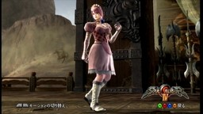
アニメ『Cosmic Baton Girl コメットさん☆』より、コメット。英語名はそのまま Comet。コメットさんは、つい「さん」付けしたくなるが、ポプリちゃんをポプリに留めた流れで、ガマンした。 変身後の衣装を参考にしたが、小さな王冠をプリムで表現しないといけないところからしてすでに苦しい。開き直って、ピンクばかりを使ってポップなドレス調に仕上げることだけを考えた。 残った選択肢は少なく、流派はカサンドラ。武器は、盾が星のようにも見えるから、カッツヴァルゲルを持たせている。 ■量産型 【Dummy EVA】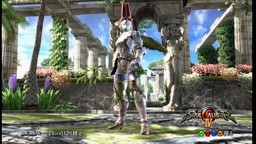
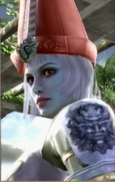
『新世紀エヴァンゲリオン』より量産型エヴァ。ダミープラグを使ってるんだろうなぁ…ということで、中の人をプカプカ浮いてた綾波みたいに白くして、英語名は Dummy EVA、12 文字制限があるので Dummy E としている。 口だけの頭をとんがり帽子で表現した。ただ、この帽子は、元のデザイン的には白をメインカラーにして赤を境界色にするほうが合っているのかもしれないが、「でかい口」の印象が強かったのでこうした。微妙な色づかいになっているのは、キャラクリでは完全な白にすることのできない金属光択や肌の色を「輝き」でごまかそうとしはじめたところから。 流派はリザードマン、武器はルナティックを持たせている。 ■仮面ライダー スーパー１ 【KRS-1】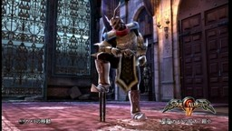
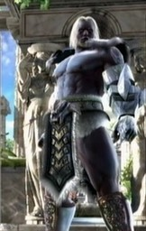
『仮面ライダー スーパー１』よりスーパー１。英語名は Kamen Rider Super-1 から KRS-1 としている。 仮面ライダーやウルトラマンの微妙な差をキャラクリで表現する気にならなかったが、残った流派がマキシで、何がいいかなぁ…と迷っているときに、「うなる…せきしんしょうりんけん」という歌を思い出して、スーパー１を作ろうと思い立った。 肌は人外な青みがかった黒にしたが、おかげで、鎧がはずれたときも少しスーパー１ふうになるようにできた。当然、流派はマキシ。 ■ロゼ 【Rose】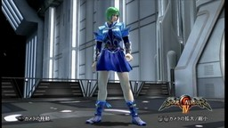
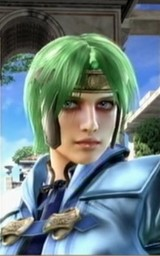
『六神合体 ゴッドマーズ』よりロゼ。False-Odin を思い出させる「ギシン」星人なのは偶然。英語名は Rose、おそらくローズと読まれ、日本語名と語感が違うだろうが、そのままにした。 私は藤川桂介の小説版が好きだった。今読むと当時の感激がわからないが、だからこそ逆に、いくつもの元型を産まれながら・生きながらに抱いた子供達が、時代の象徴ととも見ている世界の豊かさを、こんな大人になった私に推測させてくれる。 甲冑はほぼ戦乙女シリーズになった。でも、アルテミスやヴァルキリーといった元型にこういう衣装を着せる元は、むしろロゼのほうなのだ…と私は思ってしまう。流派はジークフリート。 ■かなみ 【HUH】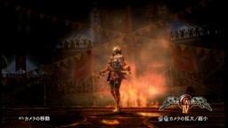
最後は、ほぼオリジナルキャラかな。私なりのエヴァの「最終形」を描こうとした。上の量産型をコピーしたあと、とりあえず「とんがり帽子」をはずすとき、「狐面」をしたままで被れるものがあるかと試したところ、「聖光の頭巾」なら可能だというところから、少しずつ、色を変え、表情を変え…と作っていった。 名前は、ヘブライ語などで EVE はハワ、母音は記述しないので、子音を並べれば CH U H …といったところから、英語名を HUH とした。そう書くとアドナイと読む神の名 YHWH に近い…金色を多く使ったし…、Lilith は夜見姫にしたし…などと考えた末、日本語名は、かなみ とした。漢字で書くと、神名見・神成見・神為見、または、金巳だろうか。 残った流派はタリム。声を女性ボイス１ 高さ：-39 にしたのだが、元来、高い声を低くしたせいか、夜など、他の声より大きく響いて聞こえて困る。 ■備考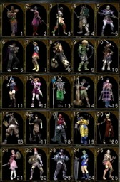
ここまでの全てのキャラが集合したキャラクリ表のイメージも載せておく。 正直、キャラクリは、気がつくと時間を使っていることが多く、CPU との対戦は、画面が派手で脳裡に焼け付く感がある。まさに<ruby><rb>魂</rb><rt>ソウル</rt></ruby>を狩られている感じで、楽しいんだけど、疲れた。 とりあえず、キャラクリに普通に使える 25 流派それぞれに一人づつキャラクリし終った。区切りもいいので、次のキャラクリは、少し間を置きたいと考えている。ゲームの実績解除は進んで、アイテムは全部買えるようになったが、塔の攻略はまだなので、しばらくは、そちらをゆっくり攻略しようかと思う。 なお、使ったツール類は懐かしキャラ 編 その１までと同じ。関連サイトはバビル２世 編で紹介しているが、ぶるのばの きろん様には、今になってのソウルキャリバー４の記事の再録の他、当ブログにコメントをいただくなど、私のゲームライフにお付き合いしてくださったことを特筆しておく。 (きろん様、ありがとうございました。) 更新：2010-11-05 初公開：2010年11月05日 04:25:53 最新版：2010年11月08日 09:51:44
Trackbacks: 《ソウルキャリバー４ カスタムキャラ７ ゲーム編４》 from ぶるのば さて、またもやソウルキャリバー４のカスタムキャラです。今回はゲームキャラってこと 受信： 2010-11-12 21:02:21 (JST) Comments: [E:wobbly] 更新：誤字訂正のほか、少し説明を補足したりした。 投稿: JRF | 2010-11-06 20:05:49 (JST) If you are open to having a guest blog poster please reply and let me know. I will provide you with unique content for your blog, thanks. 投稿: medical billing | 2010-11-10 19:08:46 (JST) [E:penguin]こんにちわ。 メジャーなの、マイナーなのと色々作ってますね～。 ダイアポロンってかなりマイナーな感じですよね＞＜。 黒ベエはうちが作ったら、絶対ムキムキなキャラになってたでしょう・・・ やっぱりこうやって他の人が作ったキャラ観るのはすごく楽しいですね、 こんな作り方があったのか～って、次作る時の参考になりますしね。 もうパーツは増えませんが＞＜。 JRFさんのおかげでキャリバーの残りのキャラをUPする、 きっかけができてよかったですよ～、 こちらこそありがとうござまいました～！ ではでは。 投稿: きろん | 2010-11-12 21:17:56 (JST) how are you!This was a really marvelous theme! I come from milan, I was luck to search your theme in wordpress Also I learn a lot in your theme really thank your very much i will come again 投稿: bet365 | 2010-11-27 16:49:25 (JST) One again, your article is very nice 投稿: best registry cleaner | 2010-12-02 10:26:31 (JST) [E:snow] 2012年2月にソウルキャリバー５が発売され、この記事に訪れる人も増えています。以前より「キャラクリ レシピ」で検索してくる方もいたので、SC5 発売記念ということで「レシピ」、つまり、キャラクタークリエーションのパラメータ画面も、公開することにしました。 こちらになります→ JRF_SC4_20120208.zip なお、ソウルキャリバー４はバンダイナムコゲームズ(NBGI)の2008年発売の著作物です。私自身は「レシピ」を同人で売れたりしたらいいのになぁ…即売会とかのお祭りにゲーム機とディスプレイを持ちこんで遊べないかなぁ…とか夢想してたのですが、まぁ、需要もそれほどないようですし、とりあえず公開したほうが愛着を持ってもらえるかと考え、無料で公開することにしました。ネットで公開した以上、NBGI がどういうかはわかりませんが、基本的に私としては自由に使っていただいてかまいません。 とはいえ、同人活動への色気は残しておきたいので、ダウンロード数がカウントできる SugarSync に置いています。そこに別サイトからリンクするのはいつでもこちらがリンクを切れるのでいいのですが、別サイトにアーカイブを置いての配布は、私か NBGI がいいと言わない限りやめていただくようお願いします。(私の公開自体が同人誌な勝手な公開ですので、NBGI の明示の許諾さえあれば、私は文句をいいません。) (記事ではなくコメントで書いたのは、記事のあとに PC が変わってるので、私の記事投稿システムだと更新に不安があったからです。orz) 投稿: JRF | 2012-02-08 21:10:14 (JST) Links: バビル２世 編: http://jrf.cocolog-nifty.com/column/2010/10/post-1.html 懐かしキャラ 編 その１: http://jrf.cocolog-nifty.com/column/2010/11/post-1.html ソウルキャリバー４: http://www.soularchive.jp/SC4/ 赤毛のアン: http://www.b-ch.com/ttl/index.php?ttl_c=1391 最近ジブリから映画化: http://www.ghibli-museum.jp/anne/ UFO戦士 ダイアポロン: http://ja.wikipedia.org/wiki/UFO%E6%88%A6%E5%A3%AB%E3%83%80%E3%82%A4%E3%82%A2%E3%83%9D%E3%83%AD%E3%83%B3 X-MEN: http://www.amazon.co.jp/dp/B00005FVSG ジャングル黒べえ: http://www.amazon.co.jp/dp/4091434290 Cosmic Baton Girl コメットさん☆: http://www.amazon.co.jp/dp/B00005ULJF 新世紀エヴァンゲリオン: http://www.gainax.co.jp/anime/eva/index.html 仮面ライダー スーパー１: http://www.amazon.co.jp/dp/B000228U3A 六神合体 ゴッドマーズ: http://www.dmm.com/digital/anime/-/list/=/article=series/id=62451/ 小説版: http://www.amazon.co.jp/dp/B000J7KRI4 ぶるのば: http://bluenova.cocolog-nifty.com/blog/2010/11/post-dd15.html medical billing: http://www.medicalbillinginfoblog.com きろん: http://bluenova.cocolog-nifty.com/blog/ bet365: http://www.xdmweb.com/ best registry cleaner: http://www.registrycleaner.at/ JRF_SC4_20120208.zip: https://www.sugarsync.com/pf/D252372_79_7677794300
後方参照 (22 件)
- URL参照 前期の翌日(2016-01-01)から昨日(2016-03-31)まで 91 日間のアクセス解析・近況など 2016年04月01日 12:53:25
- URL参照 前期の翌日(2015-10-01)から昨日(2015-12-31)まで 92 日間のアクセス解析・近況など 2016年01月01日 01:58:23
- URL参照 前期の翌日(2015-07-01)から昨日(2015-09-30)まで 92 日間のアクセス解析・近況など 2015年10月01日 13:47:48
- URL参照 前期の翌日(2015-04-01)から昨日(2015-06-30)まで 91 日間のアクセス解析・近況など 2015年07月01日 05:36:05
- URL参照 前期の翌日(2015-01-01)から昨日(2015-03-31)まで 90 日間のアクセス解析・近況など 2015年04月01日 09:16:30
- URL参照 前期の翌日(2014-10-01)から昨日(2014-12-31)まで 92 日間のアクセス解析・近況など 2015年01月01日 06:55:14
- URL参照 前期の翌日(2014-07-01)から昨日(2014-09-30)まで 92 日間のアクセス解析・近況など 2014年10月01日 05:31:54
- URL参照 前期の翌日(2014-04-01)から昨日(2014-06-30)まで 91 日間のアクセス解析・近況など 2014年07月01日 09:02:01
- URL参照 前期の翌日(2014-01-01)から昨日(2014-03-31)まで 90 日間のアクセス解析・近況など 2014年04月01日 06:35:22
- URL参照 前期の翌日(2013-10-01)から昨日(2013-12-31)まで 92 日間のアクセス解析・近況など 2014年01月01日 01:27:22
- URL参照 前期の翌日(2013-07-01)から昨日(2013-09-30)まで 92 日間のアクセス解析・近況など 2013年10月01日 01:14:59
- URL参照 前期の翌日(2013-04-01)から昨日(2013-06-30)まで 91 日間のアクセス解析・近況など 2013年07月01日 01:50:58
- URL参照 前期の翌日(2013-01-01)から昨日(2013-03-31)まで 90 日間のアクセス解析・近況など 2013年04月01日 01:17:46
- URL参照 前期の翌日(2013-10-01)から昨日(2012-12-31)まで 92 日間のアクセス解析・近況など 2013年01月01日 01:17:42
- URL参照 Virtua Fighter 5 FS コスプレ：リリアン女学園 編 その２ 2012年12月21日 21:09:38
- URL参照 Virtua Fighter 5 FS コスプレ：イロモノ 編 2012年12月21日 21:13:20
- URL参照 Virtua Fighter 5 FS コスプレ：懐かしのスター 編 2012年12月21日 21:17:33
- URL参照 前期の翌日(2012-07-01)から昨日(2012-09-30)まで 92 日間のアクセス解析・近況など 2012年10月01日 03:24:01
- URL参照 前期の翌日(2011-10-01)から昨日(2011-12-31)まで 92 日間のアクセス解析・近況など 2012年01月01日 00:55:42
- URL参照 前期の翌日(2011-07-01)から昨日(2011-09-30)まで 92 日間のアクセス解析・近況など 2011年10月01日 01:32:02
- URL参照 前期の翌日(2011-01-01)から昨日(2011-03-31)まで 90 日間のアクセス解析・近況など 2011年04月01日 00:45:38
- URL参照 アルバン・ベルク四重奏団『ドビュッシー＆ラヴェル：弦楽四重奏曲… 2010年11月06日